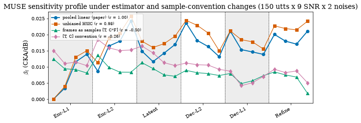
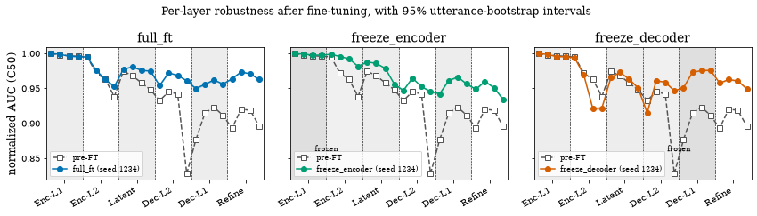

Two checks: the CKA estimator and profile-guided freezing#
Two checks close the book. The first asks whether the sensitivity profile depends on how CKA is estimated: the paper’s statistic is the biased linear CKA estimator on the time-pooled [C, F] representation, and its Centered Kernel Alignment section reports one ablation, the MUSE profile recomputed with the unbiased HSIC estimator on a reduced grid of 150 utterances x 9 SNR levels x 2 DEMAND noises with non-pooled activations, which reproduces the biased profile at a per-layer slope correlation of 0.98 with the same peak layer. Changing the sample convention instead (frames rather than channels as samples) is an additional check shipped with this book and is not in the paper. The second check is a supplementary fine-tuning experiment, also not in the manuscript, that asked whether the profile localises where adaptation effort matters; the answer was a null.
Runtime: under a minute on CPU; the gated live cell adds about a minute.
import sys
from pathlib import Path
REPO = Path.cwd().resolve()
while REPO.name != "SE-Probe" and REPO.parent != REPO:
REPO = REPO.parent
if str(REPO) not in sys.path:
sys.path.insert(0, str(REPO))
def _rel(p):
"""Repo-relative path for display (absolute only if outside the repo)."""
try:
return p.relative_to(REPO)
except ValueError:
return p
from se_probe.device import device_info, get_device
from se_probe.plotting import apply_paper_rcparams
apply_paper_rcparams()
DEVICE = get_device()
print(device_info(DEVICE))
import pandas as pd
DATA_DIR = REPO / ("results_df" if (REPO / "results_df").exists() else "results_demo")
TABLES = REPO / "results_tables"
print(f"Using data from: {_rel(DATA_DIR)}")
print(f"Paper tables from: {_rel(TABLES)}")
Detected device: cpu
Using data from: results_demo
Paper tables from: results_tables
Estimator and sample convention#
results_tables/ablation/hsic_frames_slopes.csv holds the per-layer OLS slope of CKA against SNR on the reduced grid for the four variants: pooled_linear (the paper’s statistic), hsic_unbiased (same [C, F] representation, unbiased HSIC estimator), frames_TFC ([T, C*F], frames as samples) and frames_TC ([T, C], the Demucs-style convention). Only the estimator swap leaves the profile intact; changing what counts as a sample changes which invariance is measured and gives a different profile, which is why profiles are comparable only within a fixed sample-axis convention.
import numpy as np
from se_probe.profiles import profile_agreement
ab = pd.read_csv(TABLES / "ablation/hsic_frames_slopes.csv")
VARIANTS = ["pooled_linear", "hsic_unbiased", "frames_TFC", "frames_TC"]
rows = []
for v in VARIANTS:
ag = profile_agreement(ab.pooled_linear, ab[v])
rows.append({"variant": v, "pearson_r_vs_pooled": ag["pearson_r"], "spearman_rho_vs_pooled": ag["spearman_rho"],
"peak_layer": ab.layer_short[ab[v].idxmax()], "peak_beta": ab[v].max()})
agree = pd.DataFrame(rows).set_index("variant")
display(agree.round(4))
r_hsic = agree.loc["hsic_unbiased", "pearson_r_vs_pooled"]
print(f"unbiased HSIC vs biased: r = {r_hsic:.3f} (paper 0.98), peak layer {agree.loc['hsic_unbiased', 'peak_layer']} "
f"vs {agree.loc['pooled_linear', 'peak_layer']}")
assert abs(r_hsic - 0.98) < 5e-3
assert agree.loc["hsic_unbiased", "peak_layer"] == agree.loc["pooled_linear", "peak_layer"]
assert agree.loc["frames_TFC", "pearson_r_vs_pooled"] < 0 and agree.loc["frames_TC", "pearson_r_vs_pooled"] < 0
| pearson_r_vs_pooled | spearman_rho_vs_pooled | peak_layer | peak_beta | |
|---|---|---|---|---|
| variant | ||||
| pooled_linear | 1.0000 | 1.0000 | Enc-L2.3 | 0.0242 |
| hsic_unbiased | 0.9764 | 0.9722 | Enc-L2.3 | 0.0258 |
| frames_TFC | -0.4993 | -0.3209 | Enc-L2.0 | 0.0136 |
| frames_TC | -0.2630 | -0.2374 | Enc-L2.0 | 0.0185 |
unbiased HSIC vs biased: r = 0.976 (paper 0.98), peak layer Enc-L2.3 vs Enc-L2.3
import matplotlib.pyplot as plt
from se_probe.layers import layout
from se_probe.plotting import OKABE_ITO, depth_axis
colors = {"pooled_linear": OKABE_ITO["blue"], "hsic_unbiased": OKABE_ITO["vermillion"],
"frames_TFC": OKABE_ITO["green"], "frames_TC": OKABE_ITO["purple"]}
markers = {"pooled_linear": "o", "hsic_unbiased": "s", "frames_TFC": "^", "frames_TC": "d"}
labels = {"pooled_linear": "pooled linear (paper)", "hsic_unbiased": "unbiased HSIC",
"frames_TFC": "frames as samples [T, C*F]", "frames_TC": "[T, C] convention"}
fig, ax = plt.subplots(figsize=(8.5, 3.6))
depth_axis(ax, layout("muse"))
x = np.arange(len(ab))
for v in VARIANTS:
ax.plot(x, ab[v], marker=markers[v], color=colors[v], lw=1.9 if v == "pooled_linear" else 1.2,
label=f"{labels[v]} (r = {agree.loc[v, 'pearson_r_vs_pooled']:.2f})")
ax.set_ylabel(r"$\beta_\ell$ (CKA/dB)")
ax.set_title("MUSE sensitivity profile under estimator and sample-convention changes (150 utts x 9 SNR x 2 noises)")
ax.legend(loc="upper left", fontsize=8)
plt.tight_layout();

The estimators on synthetic activations#
cka_variants builds the three representations from one non-pooled first-segment activation of shape (C, T, F) and returns all four values. The biased estimator is exact only as the number of samples grows; the unbiased HSIC estimator removes the finite-sample bias, which is visible below as the two agreeing more closely as n = C increases. linear_cka_biased on the pooled matrix is the same number as cka() in the pipeline chapter.
import importlib
import torch
cka_mod = importlib.import_module("se_probe.cka")
rng = torch.Generator().manual_seed(0)
rows = []
for C in (8, 16, 32, 48, 96):
clean = torch.randn(C, 20, 64, generator=rng)
degraded = clean + 0.6 * torch.randn(C, 20, 64, generator=rng)
v = cka_mod.cka_variants(clean, degraded)
rows.append({"n_samples (C)": C, **{k: round(val, 4) for k, val in v.items()}})
display(pd.DataFrame(rows).set_index("n_samples (C)"))
pooled_c, pooled_d = clean.mean(dim=1), degraded.mean(dim=1)
b = cka_mod.linear_cka_biased(pooled_c, pooled_d)
ref = cka_mod.cka(pooled_c[None], pooled_d[None])[0]
print(f"linear_cka_biased = {b:.6f}, cka() on the pooled matrix = {ref:.6f}")
assert abs(b - ref) < 1e-6
| pooled_linear | hsic_unbiased | frames_TFC | frames_TC | |
|---|---|---|---|---|
| n_samples (C) | ||||
| 8 | 0.9700 | 0.7610 | 0.9910 | 0.7425 |
| 16 | 0.9603 | 0.7996 | 0.9955 | 0.8636 |
| 32 | 0.9117 | 0.7205 | 0.9978 | 0.8906 |
| 48 | 0.8926 | 0.7545 | 0.9990 | 0.9395 |
| 96 | 0.8514 | 0.7573 | 1.0000 | 0.9539 |
linear_cka_biased = 0.851360, cka() on the pooled matrix = 0.851360
Optional: one real activation#
Set SE_PROBE_RUN_INFERENCE=1 (after python scripts/setup.py) to extract a non-pooled activation of the first probed MUSE layer on a synthetic clip and print the four variants.
import os
if os.environ.get("SE_PROBE_RUN_INFERENCE") == "1":
from se_probe.activation_extraction import load_muse_activation_extractor
extractor = load_muse_activation_extractor(device=DEVICE, with_pooling=False)
g = np.random.default_rng(0)
sr = 16000
clean = (g.standard_normal(sr * 2) * 0.05).astype("float32")
noise = (g.standard_normal(sr * 2) * 0.05).astype("float32")
noisy = clean + noise
act_c, _ = extractor(clean)
act_n, _ = extractor(noisy)
layer = next(iter(act_c))
print(layer, {k: round(v, 4) for k, v in cka_mod.cka_variants(act_c[layer].float(), act_n[layer].float()).items()})
else:
print("SE_PROBE_RUN_INFERENCE not set — skipping live extraction. Set it to '1' to enable.")
SE_PROBE_RUN_INFERENCE not set — skipping live extraction. Set it to '1' to enable.
Profile-guided freezing (supplementary)#
This experiment is not in the paper. If the decoder and refinement blocks are the condition-dependent stages, freezing the profile-robust encoder during dereverberation fine-tuning should cost little and freezing the profile-sensitive decoder should cost a lot. MUSE was fine-tuned under three regimes, each over three seeds (full_ft, freeze_encoder, freeze_decoder), and the resulting checkpoints were re-probed under reverberation. The answer was a null: both freezing regimes cost the same, so the profile describes a structural property of the trained network without implying that a stage is where fine-tuning quality is won. The nine checkpoints are public on Hugging Face (yairamr/SE-Probe-models, under cluster-2026-07/), and training/train.py --freeze_arm {full_ft,freeze_encoder,freeze_decoder} reproduces the arms.
Dereverberation quality per arm#
Best-epoch PESQ and STOI on the held-out RIR-Mega validation subset, mean and standard deviation over the three seeds. The freeze_encoder minus freeze_decoder difference is −0.002 PESQ with a bootstrap interval that spans zero and lies entirely below the 0.05 audibility threshold, while full fine-tuning is ahead of both arms by 0.08 to 0.09 PESQ.
FA = TABLES / "freeze_arms"
stats = pd.read_csv(FA / "jobA_stats.csv").set_index("arm")
runs = pd.read_csv(FA / "jobA_per_run_stats.csv")
pub = pd.read_csv(FA / "jobA_publication_stats.csv")
display(stats[["n_seeds", "peak_pesq_mean", "peak_pesq_std", "peak_stoi_mean", "peak_stoi_std", "trainable_M"]].round(4))
display(runs[["run", "arm", "seed", "peak_epoch", "peak_pesq", "peak_stoi"]])
PAPER = {"full_ft": (2.783, 0.011), "freeze_encoder": (2.697, 0.004), "freeze_decoder": (2.700, 0.003)}
for arm, (m, sd) in PAPER.items():
print(f"{arm:15s} PESQ {stats.loc[arm, 'peak_pesq_mean']:.3f} +/- {stats.loc[arm, 'peak_pesq_std']:.3f} (recorded {m} +/- {sd})")
assert abs(stats.loc[arm, "peak_pesq_mean"] - m) < 5e-4 and abs(stats.loc[arm, "peak_pesq_std"] - sd) < 5e-4
d = pub[(pub.metric == "pesq") & (pub.arm_a == "freeze_encoder") & (pub.arm_b == "freeze_decoder")].iloc[0]
print(f"freeze_encoder - freeze_decoder: {d['diff']:+.3f} PESQ, 95% CI [{d.diff_ci_lo:+.3f}, {d.diff_ci_hi:+.3f}], Welch p = {d.welch_p:.2f}")
assert abs(d["diff"] - (-0.002)) < 5e-4 and abs(d.diff_ci_lo - (-0.007)) < 5e-4 and abs(d.diff_ci_hi - 0.002) < 5e-4
display(pub[["metric", "arm_a", "arm_b", "diff", "diff_ci_lo", "diff_ci_hi", "cohens_d", "welch_p", "practically_significant"]].round(4))
| n_seeds | peak_pesq_mean | peak_pesq_std | peak_stoi_mean | peak_stoi_std | trainable_M | |
|---|---|---|---|---|---|---|
| arm | ||||||
| freeze_decoder | 3 | 2.6997 | 0.0032 | 0.9293 | 0.0006 | 0.37 |
| freeze_encoder | 3 | 2.6973 | 0.0038 | 0.9300 | 0.0010 | 0.39 |
| full_ft | 3 | 2.7827 | 0.0110 | 0.9333 | 0.0012 | 0.51 |
| run | arm | seed | peak_epoch | peak_pesq | peak_stoi | |
|---|---|---|---|---|---|---|
| 0 | freeze_decoder__seed1234 | freeze_decoder | 1234 | 50 | 2.701 | 0.929 |
| 1 | freeze_decoder__seed2345 | freeze_decoder | 2345 | 50 | 2.696 | 0.930 |
| 2 | freeze_decoder__seed3456 | freeze_decoder | 3456 | 50 | 2.702 | 0.929 |
| 3 | freeze_encoder__seed1234 | freeze_encoder | 1234 | 48 | 2.693 | 0.931 |
| 4 | freeze_encoder__seed2345 | freeze_encoder | 2345 | 36 | 2.699 | 0.929 |
| 5 | freeze_encoder__seed3456 | freeze_encoder | 3456 | 48 | 2.700 | 0.930 |
| 6 | full_ft__seed1234 | full_ft | 1234 | 46 | 2.789 | 0.934 |
| 7 | full_ft__seed2345 | full_ft | 2345 | 46 | 2.789 | 0.932 |
| 8 | full_ft__seed3456 | full_ft | 3456 | 46 | 2.770 | 0.934 |
full_ft PESQ 2.783 +/- 0.011 (recorded 2.783 +/- 0.011)
freeze_encoder PESQ 2.697 +/- 0.004 (recorded 2.697 +/- 0.004)
freeze_decoder PESQ 2.700 +/- 0.003 (recorded 2.7 +/- 0.003)
freeze_encoder - freeze_decoder: -0.002 PESQ, 95% CI [-0.007, +0.002], Welch p = 0.46
| metric | arm_a | arm_b | diff | diff_ci_lo | diff_ci_hi | cohens_d | welch_p | practically_significant | |
|---|---|---|---|---|---|---|---|---|---|
| 0 | pesq | full_ft | freeze_encoder | 0.0853 | 0.0730 | 0.0940 | 10.3993 | 0.0026 | True |
| 1 | pesq | full_ft | freeze_decoder | 0.0830 | 0.0707 | 0.0913 | 10.2686 | 0.0033 | True |
| 2 | pesq | freeze_encoder | freeze_decoder | -0.0023 | -0.0067 | 0.0020 | -0.6644 | 0.4626 | False |
| 3 | stoi | full_ft | freeze_encoder | 0.0030 | 0.0023 | 0.0037 | 5.1962 | 0.0031 | False |
| 4 | stoi | full_ft | freeze_decoder | 0.0040 | 0.0033 | 0.0047 | 6.9282 | 0.0011 | False |
| 5 | stoi | freeze_encoder | freeze_decoder | 0.0010 | 0.0003 | 0.0017 | 1.7321 | 0.1012 | False |
Re-probing the arms under reverberation#
Every arm was probed on the C50 axis (780 utterances, 88-RIR AIR pool, 13 levels). The pre-fine-tuning probe reproduces the manuscript’s published pretrained MUSE artifact exactly (jobA_probe_pre_ft_vs_manuscript.csv). jobA_probe_stage_summary.csv averages the normalised AUC over the four layers of each stage, per arm (mean over seeds); the frozen stages hold their pre-fine-tuning values and the adaptation shifts to the stages that were left trainable. Note that freeze_decoder leaves mag_refinement trainable and that latent is frozen in neither arm. The figure shows the per-layer profile of one seed per arm against the pre-fine-tuning profile.
import matplotlib.pyplot as plt
import numpy as np
from se_probe.layers import MUSE_STAGE_LABELS, MUSE_STAGES, layout
from se_probe.plotting import OKABE_ITO, depth_axis
stg = pd.read_csv(FA / "jobA_probe_stage_summary.csv")
piv = stg.pivot(index="stage", columns="arm", values="auc").reindex(MUSE_STAGES)
piv.insert(0, "pre_ft", stg.groupby("stage").pre_auc.first().reindex(MUSE_STAGES))
piv.index = [MUSE_STAGE_LABELS[s] for s in MUSE_STAGES]
display(piv.round(4))
ARMS = ["full_ft", "freeze_encoder", "freeze_decoder"]
colors = {"pre_ft": OKABE_ITO["gray"], "full_ft": OKABE_ITO["blue"], "freeze_encoder": OKABE_ITO["green"], "freeze_decoder": OKABE_ITO["vermillion"]}
per = pd.read_csv(FA / "jobA_probe_per_layer.csv")
pre = per[per.tag == "pre_ft"].sort_values("depth")
fig, axes = plt.subplots(1, 3, figsize=(12, 3.4), sharey=True)
for ax, arm in zip(axes, ARMS):
t = per[per.tag == f"{arm}__seed1234"].sort_values("depth")
x = np.arange(len(t))
depth_axis(ax, layout("muse"))
ax.plot(x, pre.auc.to_numpy(), marker="s", ls="--", mfc="white", color=OKABE_ITO["gray"], label="pre-FT")
ax.fill_between(x, t.auc_lo, t.auc_hi, color=colors[arm], alpha=0.25, lw=0)
ax.plot(x, t.auc, marker="o", color=colors[arm], label=f"{arm} (seed 1234)")
fz = t.frozen_in_arm.to_numpy()
if fz.any():
lo, hi = x[fz].min() - 0.5, x[fz].max() + 0.5
ax.axvspan(lo, hi, color="k", alpha=0.06, lw=0)
ax.text((lo + hi) / 2, 0.86, "frozen", ha="center", fontsize=8)
ax.set_title(arm)
ax.legend(loc="lower left", fontsize=8)
axes[0].set_ylabel("normalized AUC (C50)")
fig.suptitle("Per-layer robustness after fine-tuning, with 95% utterance-bootstrap intervals")
plt.tight_layout();
| arm | pre_ft | freeze_decoder | freeze_encoder | full_ft |
|---|---|---|---|---|
| Enc-L1 | 0.9976 | 0.9972 | 0.9985 | 0.9974 |
| Enc-L2 | 0.9670 | 0.9497 | 0.9913 | 0.9710 |
| Latent | 0.9621 | 0.9609 | 0.9759 | 0.9765 |
| Dec-L2 | 0.9119 | 0.9407 | 0.9514 | 0.9602 |
| Dec-L1 | 0.9063 | 0.9639 | 0.9586 | 0.9503 |
| Refine | 0.9069 | 0.9509 | 0.9515 | 0.9651 |
